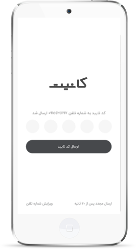
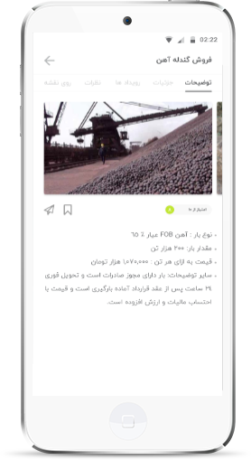

نمای اپلیکیشن
تیم کانیت جهت ارائه خدمات بهتر همواره در حال بروزرسانی اپلیکیشن خود است تا امکانات و ایده های نوینی را در اختیار کاربران قرار دهد.




تجهیزات زمین شناسی از مجموعه وسایلی هستند که هر زمین شناسی، از مقطع کارشناسی تا دکترا، به آن نیاز دارد. در اپلیکیشن کانیت، وسایل زمین شناسی با بهترین کیفیت و نازلترین قیمت عرضه میگردد. داشتن دیدگاه تخصصی، نه فقط فروش بلکه در تمامی بخشها و همچنین تکمیل مداوم اطلاعات بر روی اپ کانیت باعث گردیده که این اپلیکیشن به عنوان یک منبع قابل اعتماد شناخته شود.
کانیت در پاسخ به نیاز مراکز تحقیقاتی ، دانشگاهی و صنعتی به عنوان هستهای جهت تهیه و تامین مواد و تجهیزات آزمایشگاهی و ارائه مشاوره در زمینه زمین شناسی تاسیس گردیده است و با کادری مجرب از متخصصین علوم شیمی ، ژئولوژی و معدن به خدمت در این عرصه میپردازد.
سامانه کانیت این امکان را فراهم کرده است تا در سریعترین زمان ممکن نیروی کار ماهر و متخصص خود را در هر نقطه جغرافیایی از کشور یافته، سپس رزومه کاری آنها را بررسی کرده و در نهایت آنها را به همکاری دعوت نماید. این سامانه همچنین مشخصات شما را به نیروی کار متقاضی ارسال و تماس شما را با جویندگان کار تسهیل میکند.
تیم کانیت این امکان را فراهم کرده است که تمامی محصولات معدنی را با بهینهترین قیمت در محیطی امن و تضمین شده از بازاری به وسعت ایران تهیه کنید.
یکی از خدمات کلیدی تیم کانیت ارائه مشاوره در پروژههای بزرگ معدنی ، صنعتی و تامین منابع مالی است. تیم مشاوران کانیت آماده ارائه خدمات مشاوره در زمینه خرید و فروش، مشارکت و سرمایهگذاری و تامین نیروی کار در حیطه معدن و خدمات فنی و مهندسی از قبیل آنالیز، اکتشاف، بهرهبرداری و ثبت محدوده است.
تیم کانیت یک بستر گسترده با امکان مشارکت و سرمایهگذاری در طرحها و پروژهها و تأسیس شرکتهای مرتبط با معدن در داخل و خارج کشور فراهم کرده است. در اپلیکیشن کانیت امکان به اشتراک گذاشتن ایدهها با افراد تأثیرگذار در حوزه معدن و تامین منابع مالی و امکانات زیرساختی توسط معدن کاران و سرمایهگذاران نیز موجود است.
تیم کانیت جهت ارائه خدمات بهتر همواره در حال بروزرسانی اپلیکیشن خود است تا امکانات و ایده های نوینی را در اختیار کاربران قرار دهد.
اپلیکیشن کانیت، که در پلتفرم اندروید ارائه شده است، را میتوانید از استور های کافه بازار و گوگل پلی دانلود نمایید.